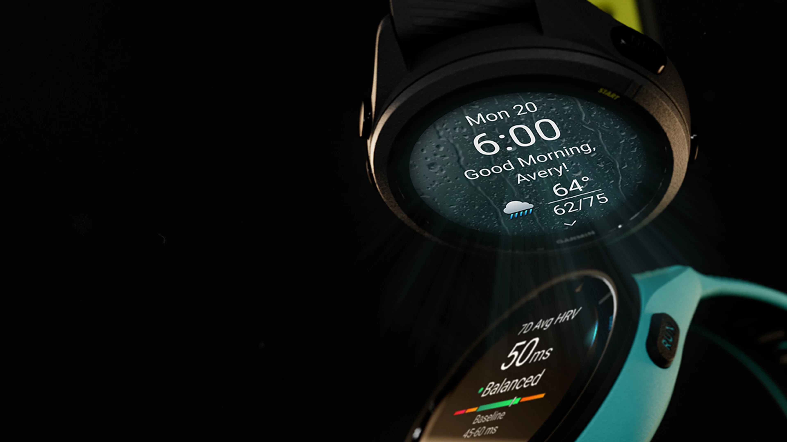
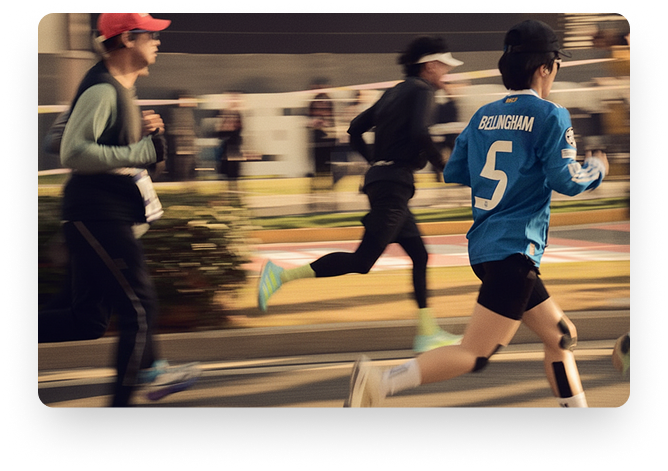

모든 기능이
한 손목 위에
Forerunner 265는 러너들을 위한 최첨단 기능을 제공합니다
1.3" AMOLED 디스플레이
선명하고 밝은 풀컬러 터치스크린으로 어떤 환경에서도 완벽한 시인성
최대 13일 배터리
스마트워치 모드에서 최대 13일, GPS 모드에서 최대 20시간 사용
고급 건강 모니터링
24시간 심박수, 수면 점수, HRV 상태, 스트레스 추적
트레이닝 준비 상태
AI 기반 트레이닝 준비도와 회복 시간 분석으로 최적의 훈련 계획
다중 위성 시스템
GPS, GLONASS, Galileo 지원으로 정확한 위치 추적
러닝 파워 측정
손목에서 바로 러닝 파워를 측정하여 효율적인 페이스 관리

완벽한트레이닝 파트너
맞춤형 트레이닝 플랜
Garmin Coach가 제공하는 개인화된 훈련 계획으로 목표 달성
실시간 성과 분석
VO2 Max, 러닝 다이내믹스, 페이스 프로를 통한 상세한 분석
회복 관리
과학적인 회복 시간 측정으로 부상 예방과 최적의 컨디션 유지
TRAIL RUNNING
어디서든
자유롭게
산악 지형에서도 정확한 GPS 추적과 고도 측정. ClimbPro
기능으로
남은 오르막 구간을 실시간으로 확인하세요.
고도 및 경사도 데이터
실시간 고도 변화와 경사도 정보 제공
네비게이션
브레드크럼 트레일과 백투스타트 기능


RACE MODE
레이스 당일
최고의 퍼포먼스
레이스 위젯으로 대회 당일 컨디션과 예상 완주 시간을
확인하세요.
PacePro™ 전략으로 완벽한 페이스 배분을 실현합니다.
100+
스포츠 프로필
5 ATM
방수 등급
나만의 스타일
다양한 컬러로 개성을 표현하세요

Black
블렉 베젤
Aqua
화이트 베젤
White
화이트 베젤